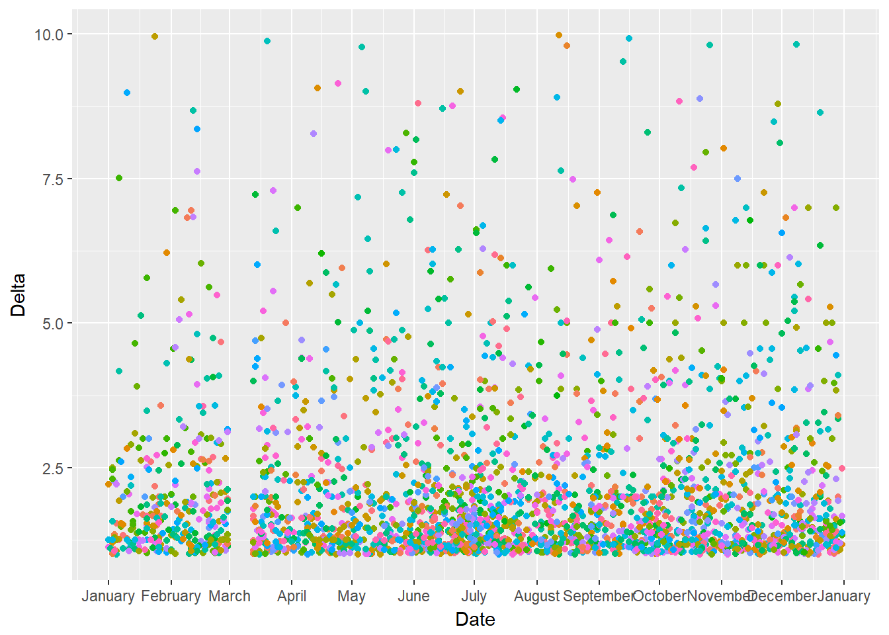
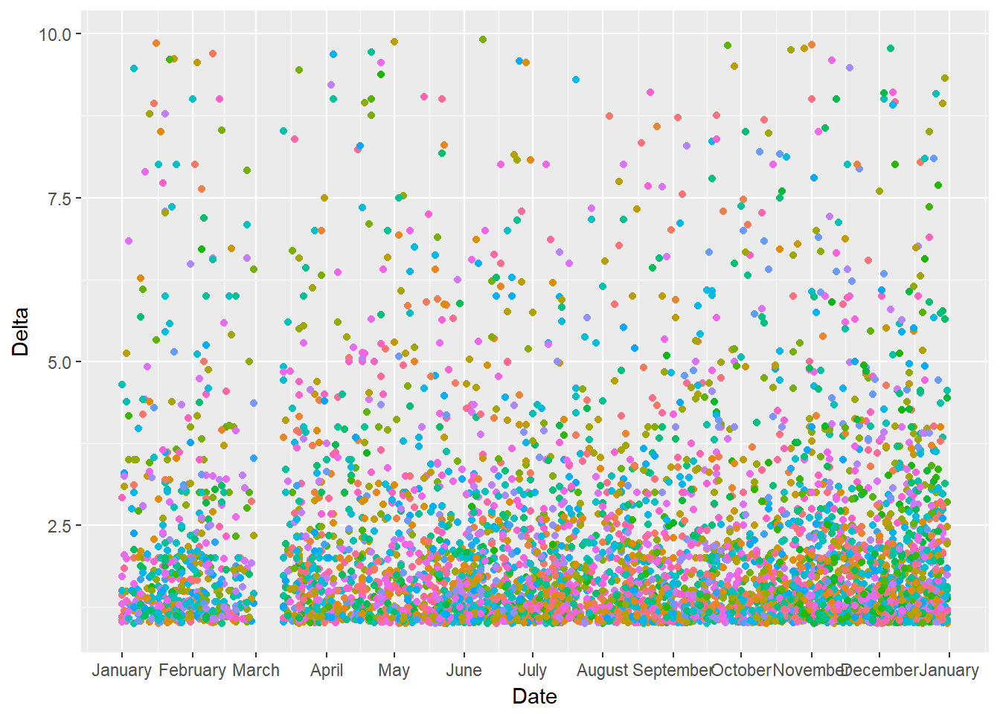
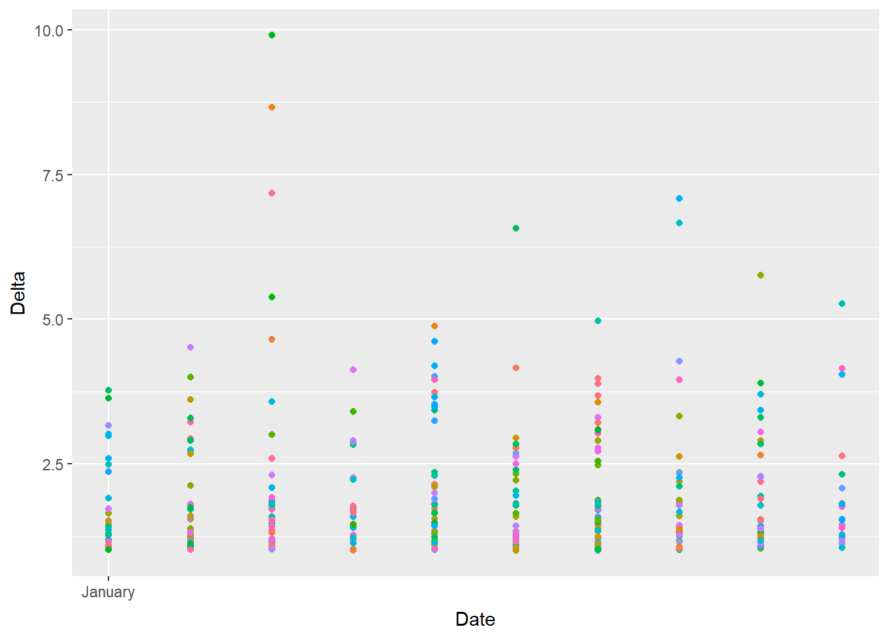
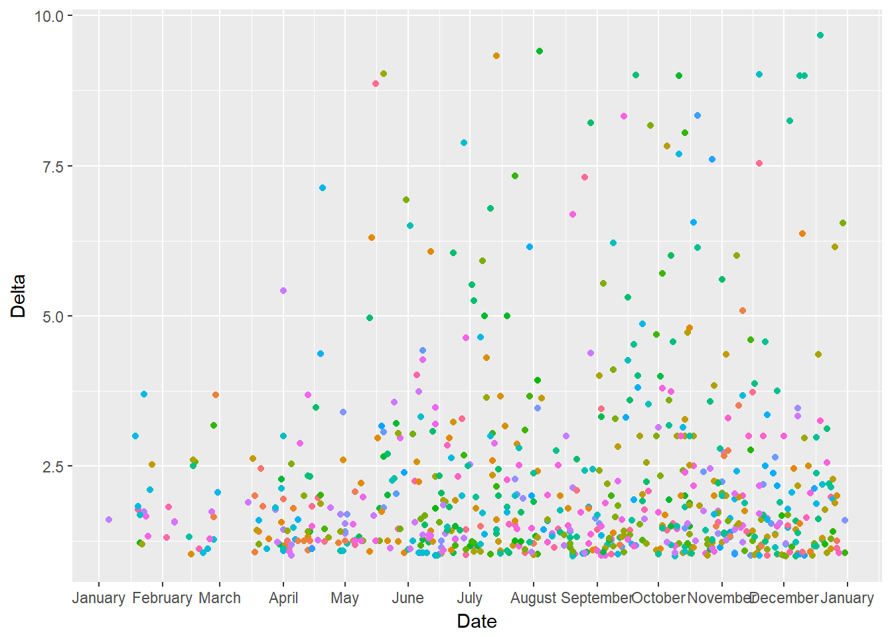
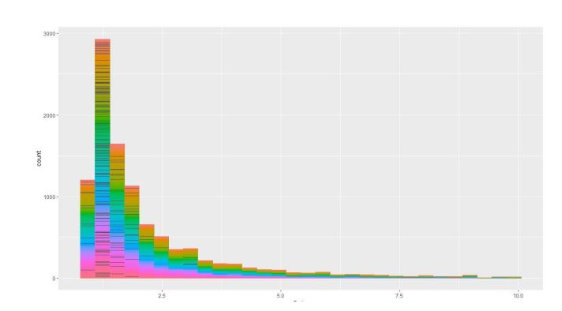
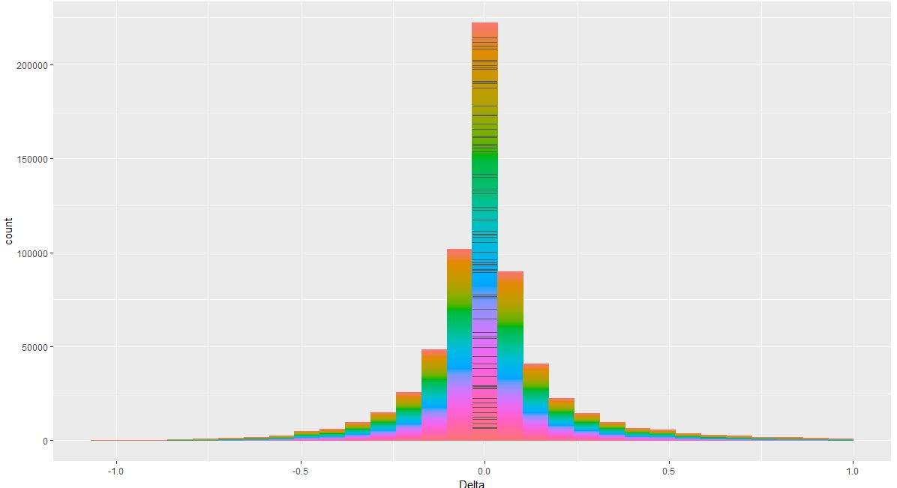

Delta
Let's start with finding the number of coins whose prices have gone more than 1000 USD.
highCoins = c()
for (i in 1:length(file.list)){
file.df <- read.csv(file.list[i],header = TRUE)
max.value <-max(file.df$High,na.rm=TRUE)
if(max.value >= 1000)
{
highCoins <- c(highCoins,as.character(file.df$coin[1]))
next
}
}
length(highCoins)
highCoins
The command length(highCoins) gives 18 as output which tells us that there have only been 18 coins whose prices have gone more than 1000 USD. So to know the names of these, we printed their names and we got the following as output
[1] "300" "42" "B2X" "BCH" "BITBTC" "BITGOLD" "BT1" "BT2"
[9] "BTC" "BTWTY" "CEFS" "DASH" "EDR" "ETH" "JINN" "MKR"
[17] "NANOX" "PBT"
Out of these 18 coins there are only a few which are known to masses. These include coins like BTC, BCH, ETH. Also the market capitalization of other coins is not very high. So this brings us to a conclusion that having a high price does not necessarily indicate that the coin would be profitable.
So to check the profitability of a coin, we introduced a new column known as Delta to our data. Delta, for a particular day, is the difference of Close and Open divided by Open.
Delta = (Close - Open)/Open
This parameter Delta gives us an idea of direction in which the prices of different cryptocurrencies change over a period of time. By analyzing this direction, the safeness of a Cryptocurrency can be found.
If the Delta for a particular coin, over a period of time, is greater than 1, that means is profitable to invest in the coin. Whereas if the Delta, for a coin, remains lower than 1, the coin is not so attractive as an investment.
So let us plot Delta for all the coins from 2014 to 2018.
total.file<- read.csv("your_path_for_data")
length(total.file$High)
head(total.file)
total.file$Date<-as.character(total.file$Date)
total.file$Date <- as.Date(total.file$Date,format='%Y-%m-%d')
total.file$Date
new.total.file<- total.file %>% mutate(Year=
format(as.Date(total.file$Date, format="%Y-%m-%d"),"%Y"))%>%
mutate(Month=format(as.Date(total.file$Date, format="%Y-%m-%d"),"%m"))
head(new.total.file)
summary(new.total.file)
year<-c("2014","2015","2016","2017","2018")
typeof(year)
typeof(new.total.file$Year)
for(y in c("2014","2015","2016","2017","2018")){
delta.yearly<-new.total.file%>%group_by(Year)%>%filter(Year==y)
delta.yearly
print(ggplot(delta.yearly[delta.yearly$Delta>1&delta.yearly$Delta<10,],
aes(x=Date,y=Delta, color=coin)) +geom_point()+
scale_x_date(date_breaks = "1 month", date_labels = "%B")+
theme(legend.position="none"))
}
In the above scatter plot, each point represents a coin. As we can see, the number of points are a bit scarce here indicating the presence of relatively small number of coins in 2014.
Delta is a column that we have added ourselves to the data. Delta, for a day, is the difference of Close and Open divided by Open. So, if delta for a particular coin is greater than 1, it indicates that investing in the coin is profitable. While if it is less than one, that indicates that the coin is not profitable. In the above graph, each point represents a coin. As we can see, tha number of points are a bit scarce here.
Many more new coins came in the market in 2016. This indicates that the Cryptocurrency market is a growing market.
The graph has become more condensed indicating a significant increase in the number of coins from 2014 to 2017.
Since our data did not contain much information about all the coins for the year 2018, the graph here is scarce. If we plot the scatter plot based on the real time data, this plot will become even more condense.
Now let's plot the distribution of the count of all coins delta whose value exceeds one
ggplot(total.file[total.file$Delta > 1 & total.file$Delta < 10, ],
aes(x=Delta, color=coin)) +geom_histogram() +
theme(legend.position="none")
We get the following graph

As the intuition says, most number of coins have delta less than 2. A very few coins have seen their delta going more than 5.
Next we plot the distribution of the count of all coins delta whose value is less than one
ggplot(total.file[total.file$Delta <1, ], aes(x=Delta, color=coin)) +
geom_histogram() +
theme(legend.position="none")
We get the following graph

Since there are coins whose delta is less than 1, it shows that there are coins which are not safe to incest in. Also, maximum number of coins in this histogram has delta between 0 and 1. It shows that there many coins in which investing doesn’t return high profits but it also doesn’t let the investor suffer loss